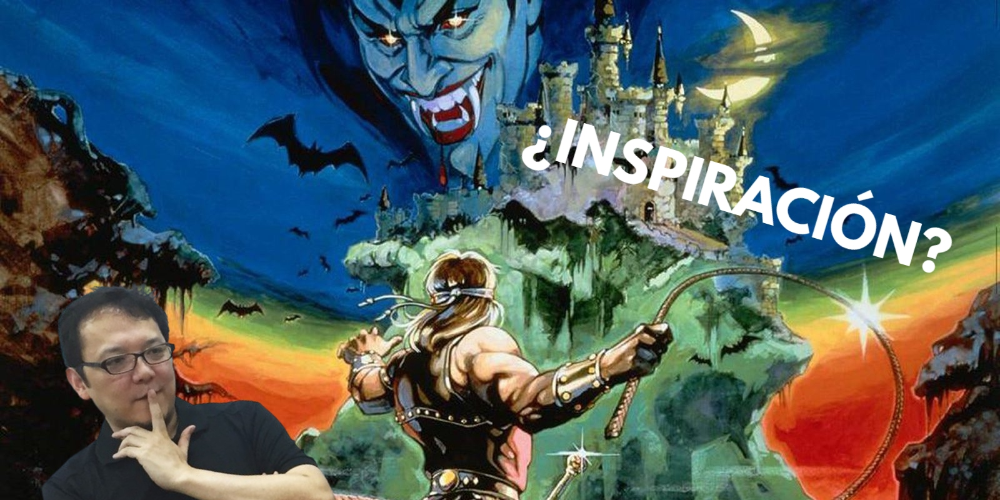
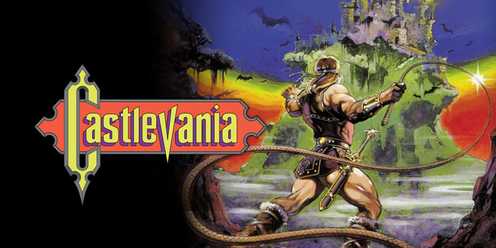
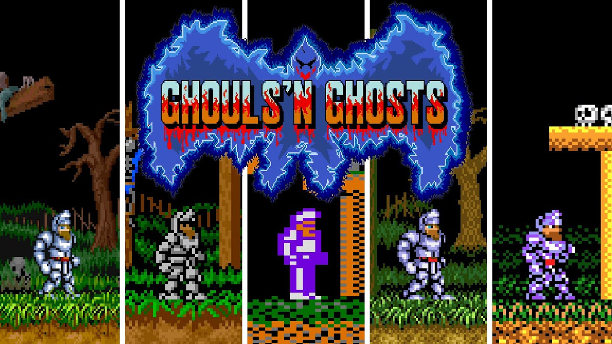
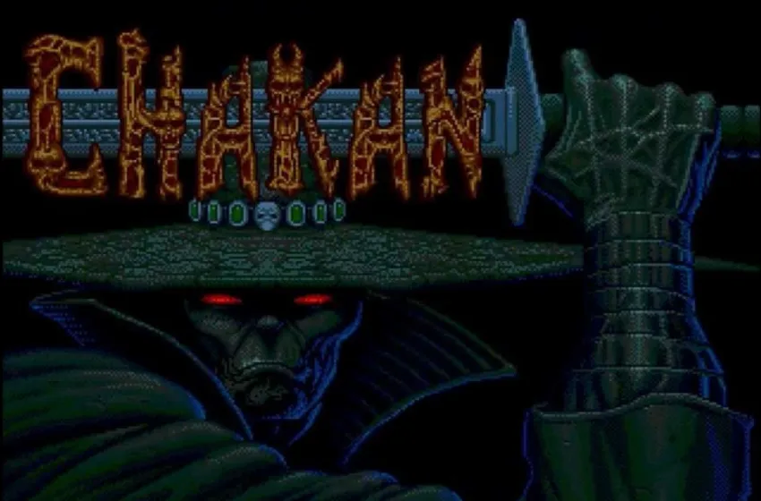

¡Juega a las obras que inspiraron a Miyazaki!
Conoce (y juega) a los juegos retro que inspiraron a Hidetaka Miyazaki para crear sus videojuegos de la saga Souls
Os presentamos de manera jugable los 3 títulos que inspiraron a Miyazaki para la temática de Demon Souls, Dark Souls, Bloodborne y Elden Ring
1. Castlevania NES

Nombre: Castlevania
Año: 1986
Desarrollador: Konami
Argumento: Es el año 1691. La tierra de Transilvania ha permanecido en paz por más de cien años gracias a los esfuerzos de Christopher Belmont. Los campesinos y aldeanos han empezado a purgar sus mentes de los recuerdos de aquellos tiempos en que sus tierras fueron dominadas por caos y sombras, tiempos en que los no muertos caminaban sobre la tierra. Sin embargo, otros recordaron que cada cien años el Conde Drácula regresa a plagar la tierra, trayendo consigo las fuerzas del infierno. Así, una noche, el Príncipe de la Oscuridad se levantó y retornó a Castlevania, su hogar ancestral, llamando a sus demonios para purgar el mundo de los humanos. La gente clamó por un héroe, alguien que los defendiera de los malignos deseos del conde.
Similitudes con la saga Souls: Ambiente oscuro y opresivo cargado de criaturas (solo hay que verlo)
NOTA: para eliminar el anuncio, dale al play y aparecerá una cruz en la esquina superior derecha ;)
Controles (configurables en la parte superior derecha)
Enter: Start
← ↑ → Moverse
A: Z
B: X
X: A
Y: S
2. Ghouls'n Ghosts

Nombre: Ghouls'n Ghosts
Año: 1988
Desarrollador: Capcom
Similitudes con la saga Souls: La temática medieval, donde eres un caballero solitario con una misión y objetivo principal que deberás de cumplir superando obstáculos tales como criaturas y bestias demoníacas
NOTA: para eliminar el anuncio, dale al play y aparecerá una cruz en la esquina superior derecha ;)
Controles (configurables en la parte superior derecha)
Enter: Start
← ↑ → Moverse
A: Z
B: X
X: A
Y: S
3. Chakan, The Forever Man

Nombre: Chakan, The Forever Man
Año: 1992
Desarrollador: Extended Play Records
Argumento: El videojuego sigue la historia de Chakan, un guerrero quien estaba tan confiado de sus habilidades marciales (especialmente su habilidad con la espada sin igual) y habilidades talentosas en la hechicería y la alquimia, que declaró que ni siquiera la mismísima Muerte podría superarlo en una batalla. Por supuesto, la Muerte se hizo presente y desafió a Chakan con una proposición. Si Chakan podía vencerle, le concedería la vida eterna. Sin embargo, si Chakan era derrotado, se convertiría en el sirviente eterno de la Muerte. Aunque esa es la premisa que se anuncia en el videojuego, en otro historia paralela, Chakan era tan temido por los ancianos de varias tribus, que dejaron a un lado sus pequeñas diferencias y amasaron como encontrar una manera de derrotarlo o contenerlo, y al escuchar sobre su alarde, convocaron a la Parca ellos mismos, informando al Segador de sus fanfarronadas, y lo contrataron para derrotar a Chakan.
Similitudes con la saga Souls: Algo más similar al ambiente Bloodborne, comparte la jugabilidad zona-jefe y esa temática basada en el terror cósmico
NOTA: para eliminar el anuncio, dale al play y aparecerá una cruz en la esquina superior derecha ;)
Controles (configurables en la parte superior derecha)
Enter: Start
← ↑ → Moverse
A: Z
B: X
X: A
Y: S